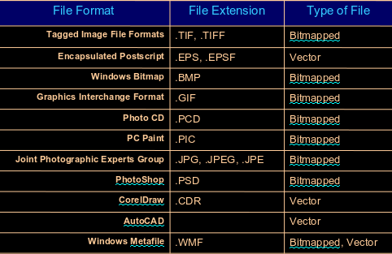

Digital Media
Table of Contents
1 Media vs Multimedia
1.1 Media
Different types of forms of communication be it audible, visual, etc.
1.2 Multimedia
When media are combined, the outcome is multimedia. Some examples include WWW, illustrated books, TV etc.
1.3 Interactive-time, time and static
- Static media is the type of media that simply does not change
- Time based may change over time
- Interactive-time is a media type in which the media is type based but can be interacted with, the user can jump around segments or chapters so to speak like in a flash animation
1.4 Linear and non-linear
Linear for example can be a book or a TV show, movie. The essence of non-linearity is the essence of multimedia where the user can interact with the multimedia presented.
1.5 Media models
- Page based: text, images etc. two dimensional arrangement
- Time based: video clips, sounds
- Hypermedia: where user can jump around the media provided, like the WWW
- Gaming: it is the most ambitious application of media as it very demanding on both the creators and the users
2 Digital Media
2.1 Digital Media vs Multimedia
The most important difference is the fact that digital media is stored as data and can be easily manipulated and interacted with. Standard multimedia unfortunately does not have that benefit.
2.2 Digital media definition
Content that is encoded in a digital format and therefore readable by some sort of computer software
2.3 Poor website design
- Auto loading audio/video
- Boring
- Poor readability
2.4 Aspects of digital media
- Text
- Image
- Sound
- Animation
- Video
2.5 Multimedia
- Multimedia is everything you can touch or see, on the technical level it is:
- text
- images
- sounds
- animation
- video
- Touch, sound, sight, smell, taste
- Used to: inform, educate, entertain
Features
- Interactivity
- Hyperlinking
Categories where media/multimedia usually occurs:
- Education
- Entertainment
- Reference
- Business
Delivery
- CD/DVD/Blueray (solid media), quick access time, cannot change content
- WWW, modern access time is excellent, can update content very easily
2.6 Spreading multimedia
Current tools
- Other people
- Telephone
- Radio
- TV
- Internet
- It is fast
- It is cheap
- Accessibility: reaches people everywhere
2.7 Media history
- 15,000 - 13,000 Prehistoric human paint in caves
- 1914 Silent movies incorporate text with captions and images
- 1928 Walt Disney's Steamboat Willie
- 1928 - 1931 Movies with sounds replace silent movies
- 1969 Arpanet (advanced research projects agency network) links UCLA, Stanford, UC Santa Barbara, University of Utah. First implementation of TCP/IP. Introduced packet switching as well.
- 1977 Apple leads the way
- 1981 IBM PC
- 1991 WWW
- 1992 Windows 3.1
- 1992 HTML
- 1993 First graphical browser (Netscape)
- 1994 Rolling stones first internet live performance
- 1995 Toy Story
- 1996 Digital Cameras
- 1998 Google
- 1999 Napster
- 2003 Android
- 2005 YouTube
- 2007 iOS
- 2013 Disney's last traditionally animated film
2.8 WEB 2.0
Is a trend in web design, development and can refer to a perceived
second generation of web-based communities and hosted services
such as social-networking sites, wikis, blogs, and folksonomies
which aim to facilitate creativity, collaboration, and sharing
between users.
2.9 The future
- A lot of legal issues due to quickly expanding technologies
- Multi skilled developers are likely to be required
- Think globally and have a business setting
3 Digital data
3.1 ASCII
American Standard Code for Information Exchange
3.2 Digitization
- Is a process of translating a piece of information(book, sound, picture, video) into binary bits.
- Digitization is also described as converting from analogue to digital.
Quantization
- Quantization specifies the number of intervals the analogue value can have.
- Too few quantization levels leads to posterization in pictures and to quantization noise in sound
- Posterization presents itself in a form of non-gradual transition from one colour to another
Sampling
- Sampling rate describes how many samples are taken in a given amount of time. Example : 10 samples a second
- Poor sampling can lead to Moire Effect, which looks like lines cutting across the image at points where there are not enough samples
3.3 Compression
- Different algorithms suit different data
- There are established ways of representing media
3.4 Transmission
- Media such as copper wires and optical fibres transmit time-varying signals; digital information must be encoded for transmission
4 Images
4.1 Images representation
- An image is an array of pixels. It is represented in a form of an array
Character set
- Is a mapping from characters to character codes
- Unicode is a character set capable of representing text in all known languages
Font
- A font is a set of character shapes, called glyphs
4.2 Posterization
- This effect occurs due to underquantization. It is especially visible when one color does not transition to an another smoothly
4.3 Moire effect
- Is a sudden and abrupt change in colour (from one to another) in imagery. It is an effect of undersampling and is especially visible in striped patterns
4.4 Image Compression
LZW
Used in GIFs, it is lossless.
RLE
Run Length Encoding (Entropy Coding) checks for repeated occurrence of 4 or more bytes.
eg. AAAA = A!4
JPEG
Uses a complex algorithm (intensity can be set by the user). It uses an algorithm
that looks for adjacent pixels of similar brightness, as opposed to colour.
Usually done on pixels in blocks of 8x8.
Dithering
Reduce range to 256 colours or less. Puts pixels side-by-side to give an illusion of a
third one in between. Dithering is a process of juxtaposing (arranging pixels).
Interlacing(GIF) Progressive(JPEG)
Increases files size but allows for a preload. Used specifically on websites.
5 Graphics
5.1 Pixel
- The word pixel is based on pix ("pictures") and el (for "element")
- In digital imaging it is the smallest physical point in an image, or the smallest addressable element
5.2 Color Representation and bit depth
- Each bit is 2 to the power of that bit color possibilities. So a 4 bit image has 16 colours, it is also know then as a 4 bit colour depth (bit-depth)
5.3 Color models
- Additive RGB, three colours Red Green and Blue are added to create white at its max level, otherwise variations of levels of addition of these three colours can create any other colour known
- Subtractive CMYK, colors are subtracted from white to create black at max level, otherwise variations of levels of subtraction of these colours can create any other colour
- Yellow absorbs short waves (blue) and allows the rest to pass
- Magenta absorbs medium waves (green) and allows the rest to pass
- Cyan absorbs long waves (red) and allows the rest to pass
- Greyscale, small size, colour-blind friendly, immune to colour reproduction on different monitors
5.4 Look Up Tables
- If an images contains only a few colours (256 for example), but it needs to look realistic, then the LUT is used to translate from a true colour picture to a smaller value of only 256 unique colours.
5.5 Resolutions
- Web, set to 72 dpi
- Monitors and still cameras, set to 72 dpi
- Laser printers, 300 - 600 dpi
- High end imagesetters 1200 dpi, 2400 dpi or even higher
5.6 File formats

6 Audio
6.1 Digitization
- Sampling (samples per second), vertical
- Quantization: number of intervals of the horizontal line the analogue value can have
- Using too few quantizations can lead to quantization noise in the sound
6.2 Wide Quantization
- Leads to posterization and Moire effect
- Creates more noise
6.3 Characteristics
- Amplitude: height determines the volume. It is also the measure of displacement of the air pressure wave from its mean or quiescent state. Measured in decibels dB.
- Volume: the higher the wave the louder the sound
- Frequency: width determines the pitch, high frequency - high pitch, low frequency - low pitch. Very low pitch is also called infrasound, very high pitch is also called ultrasound
- Pitch or frequency: the closer together the waves the higher the pitch. It is a description of how high or low the sounds seem to a person.
6.4 Quality of digital audio
- Sample rate
- Sample size
- Channels
- Codecs
7 Animation
7.1 Used in
- Entertainment
- Education
- Information
- Etc.
7.2 Definitions
- Key Frame: Used as an indicator of an important frame that always needs to be rendered
- Animation: is a simulation of movement via a series of pictures
- Frame: each individual picture/image/drawing in an animation
- FPS: frames per second
7.3 History
- "Cel" (Celluloid): clear sheet material used to draw pictures on.
- Cel sheets were displayed rapidly to create an illusion of a movement.
- Traditional Cel: individual frames were mostly hand drawn.
- Digital Cel: assisted by computers. Use of various assistive technologies.
7.4 Types of animation
Sprite sheets
- Sprite sheets are used in computer animation or games and are a frame-by-frame type of animation.
- Sprite sheets are a collection of static images on a single sheet. Not like a gif, where the images are saved in a sequence.
- Each sprite can be a collection of images aka sprite faces, which can be substituted in sequence to produce composite animation
Frame-by-frame, frame based animation
- In a frame-by-frame animation every frame is a key frame. Huge size, as every frame is individual, therefore every frame changes the content of stage.
- Animation sequence is created out of a series of pictures.
Key frame animation
- Traditional: key frames are drawn by chief animators at important points, in-between frames are drawn by less skilled animators
- Computer-based: key frames are drawn explicitly, in-between frames are drawn by software
Variables of transitions, aspects of animation
- Frame rate: speed of the animation
- Transitions: special effects, fades etc.
- User Control: playback control, pause, rewind, etc.
- Looping: loop until it is stopped by the user
Morphing
- Transition(blending) from one picture to another
Animated gifs
- Formerly called the multi-block gif. Very popular standard for animations.
- Characterized by a small files size due to small amount of colours and the usage of blocks, repeated parts.
Flash (SWF)
Outdated format of animations for the web. It is being phased out due to security issues.
It is still vastly used to produce quick animations for cartoons etc.
- Timeline
Graphical representation of frames
- Key frames
- Simple frames
- A frame is a measure of time on the Timeline
- Symbol
- An instance of an object. Allows for a fast copy of drawing objects
- Motion tweening
- Tweening is how the object moves from point A to B
- Allows for different transition types, speed, etc
- Shape tweening
- Morphing, etc.
- Onion skinning
- Shows the previous frame, to allow for an easier depiction of the movement
- What can be tweened?
- position
- shape
- rotation
- size
- color
- opacity
- Drawing Modes
- In merge mode: Shapes drawn onto the stage
- In object drawing: Each object is a separate instance of the project.
- In primitive drawing: Allows for full customization: angles, shapes, sizes etc.
- Frames and key frames in flash
- Creating motion with key frames and tweening : content gets placed only within key frames, the software fills in the gaps between key frames making it very easy to produce animation quickly.
- Creating motion with frame-by-frame rendering : content needs to placed and adjusted on a frame-to-frame basis. Very accurate but also very time consuming.
8 Video
8.1 Digital Video
Composed of multiple frames. Series of bitmap graphics.
8.2 Compression technologies
In order to reduce internet bandwidth and the storage of personal computers and servers compression is used
8.3 Two types of compression
- Lossless: the file size is reduced but the quality is the same
- Lossy: the file size is reduced but at a cost of quality
8.4 Video Compression Technologies
- Spatial Redundancy Removal: intraframe coding (JPEG), It actually compresses individual frames, like a series of JPEGs
- Temporal: interframe coding. Greater compression but the difference between frames is noticeable. Based on calculating the differences between separate frames
- Spatial and Temporal Redundancy removal: intraframe and interframe coding (H.261, MPEG)
- Temporal correlation: Using the differences between frames to reduce the size of the output
8.5 Popular codec software
- H.264: standardized by MPEG
- Theora: developed by Xiph.org
- VP8: developed by Google
8.6 Video formats
A lot of these are or aren't supported by certain browsers. Refer to the comparison charts online.
- Ogg: uses Theora and Vorbis
- Mpeg4: uses H.264 and AAC
- WebM: uses VP8 and Vorbis
8.7 Four parts to every video
- Video stream
- Audio stream
- Meta data
- Container
9 SVG
- SVGs are vector images
- Vector images scale very well
- They do not lose quality when they are stretched or shrunk
SVG images are a strong recommendation for websites and publishing